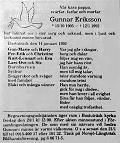

Erik Gunnar Eriksson
Minkfarmägare på Myrberg 1:15, Bastruträsk, Norsjö sn 1950. Blev 86 år.
| Född: | 1905-10-15 Andersträsk, Jörns fs, Jörns kn. [1] |
|---|
| Änkling: | 1990-03-31 Kanalg 5, Bastuträsk, Norsjö fs, Norsjö kn. [2] |
|---|
| Död: | 1992-01-12 Kanalg 5, Bastuträsk, Norsjö fs, Norsjö kn. [2] |
|---|
| Vigsel: | 1936-06. |
|---|
| Levde: | 1971 Myrberg, Bastuträsks kbfd, Norsjö kn. [1] |
|---|
| Levde: | 1981 Myrberg 1:15, Myrberg 3023, Bastuträsk, Bastuträsks kbfd, Norsjö kn. [3] |
|---|
Personhistoria
| Årtal | Ålder | Händelse |
|---|
| 1905 |
|
Födelse 1905-10-15 Andersträsk, Jörns fs, Jörns kn [1] |
| 1910 |
4 år |
Makan Helga Hallly Mariana Lund föds 1910-08-12 Norsjö fs, Norsjö sn [1] |
| 1927 |
21 år |
Modern Maria Alexandra Bränström dör 1927-09-18 Brännlund 1:7, Norsjö fs, Norsjö sn [4] |
| 1936 |
|
Vigsel Helga Hallly Mariana Lund 1936-06 |
| 1942 |
37 år |
Sonen Kurt-Lennart Gustaf Eriksson föds 1942-11-30 Lund, Skellefteå lfs, Skellefteå sn [5] |
| 1946 |
40 år |
Sonen "Love" Lars-Ove Gunnar Eriksson föds 1946-09-29 Myrberg 1:15, Bastruträsk, Bastuträsk kbfd, Norsjö sn [6] |
| 1964 |
58 år |
Fadern Jakob Albin Eriksson dör 1964-08-25 Brännlund 1:7, Bastuträsks kbfd, Norsjö kn [7] |
| 1971 |
|
Levde Helga Hallly Mariana Lund 1971 Myrberg, Bastuträsks kbfd, Norsjö kn [1] |
| 1981 |
|
Levde Helga Hallly Mariana Lund 1981 Myrberg 1:15, Myrberg 3023, Bastuträsk, Bastuträsks kbfd, Norsjö kn [3] |
| 1990 |
84 år |
Makan Helga Hallly Mariana Lund dör 1990-03-31 Kanalg 5, Bastuträsk, Norsjö fs, Norsjö kn [8] |
| 1990 |
84 år |
Änkling 1990-03-31 Kanalg 5, Bastuträsk, Norsjö fs, Norsjö kn [2] |
| 1992 |
86 år |
Död 1992-01-12 Kanalg 5, Bastuträsk, Norsjö fs, Norsjö kn [2] |
Källor
| [1] | Mtl Västerbottens län 1971 |
| |
| | |
| [2] | RTB 92 / SPAR 92 / SPAR 92f / SPAR 95 |
| |
| | |
| [3] | Mtl Västerbottens län 1981 |
| |
| | |
| [4] | DBU, FS |
| |
| | |
| [5] | SCB Födda AC Skellefteå las 393/1942 |
| |
| | |
| [6] | Mtl Sveriges befolkning 1950 |
| |
| | |
| [7] | DB, PA / DOR 64 |
| |
| | |
| [8] | RTB 90 / SPAR 90 |
| |
|
 |
| 1992-01-14. Norra Västerbotten |
| |
|  |
| 1992-01-15. Norra Västerbotten |
|

{kind=link}